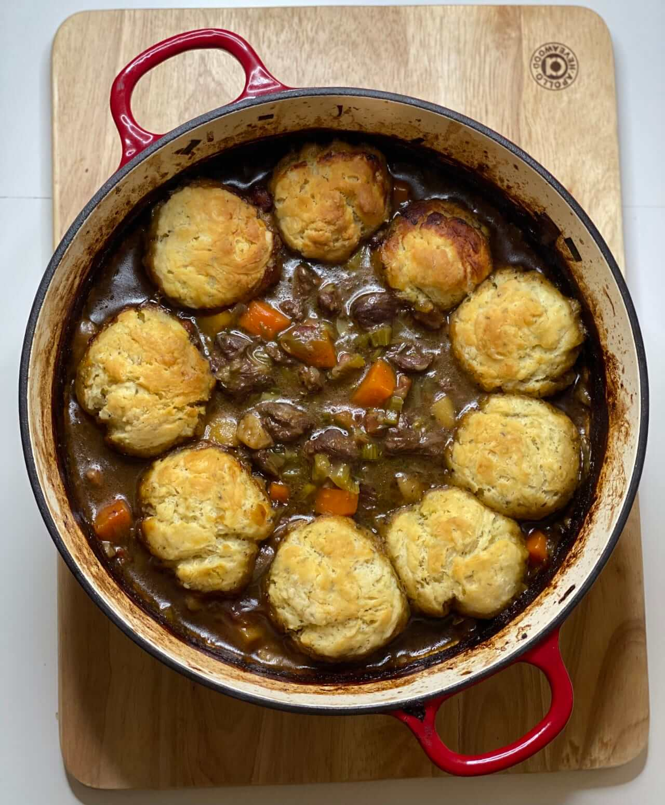

Beef Stew with Dumplings
Home Page

Description
A lovely beef stew with dumplings just like my Nana used to make.
Ingredients
- 1 ½ pounds cubed beef stew meat
- ¼ cup all-purpose flour
- ¼ cup butter
- 1 cup sliced onion
- 2 cloves garlic, minced
- 2 cups water
- ¼ cup chopped fresh parsley
- 1 teaspoon salt
- ⅛ teaspoon pepper
- 1 bay leaf
- 2 cups cubed potatoes
- 1 ½ cups diced carrots
- 1 cup sliced celery
- ½ cup chopped green pepper
- 1 cup sliced fresh mushrooms
- 1 ½ cups biscuit baking mix
- ½ cup milk
- 3 tablespoons butter, melted
Steps
- In a bowl, toss cubed beef with flour to coat.
- Heat 4 tablespoons butter in a heavy skillet over medium-high heat. Place flour in a bag or bowl, and add beef cubes. Toss to coat with flour. Place coated cubes in the skillet and fry until well-browned on all sides; remove from pan and set aside.
- Cook onion and garlic in same pan until tender. Return meat to pan with water, parsley, salt, pepper, and bay leaf. Reduce heat to low, cover, and simmer 1 hour, stirring occasionally and adding more water if needed. Stir in potatoes, carrots, celery, and green pepper, and continue cooking another 15 minutes. Remove the bay leaf, and stir in mushrooms.
- In a small bowl, mix together baking mix, 3 tablespoons melted butter, and milk until just blended. Drop dough by the tablespoonful into stew. Simmer, uncovered, approximately 10 minutes. Cover, and simmer 10 minutes more, or until dumplings are cooked through, but not dry.